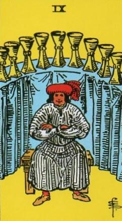
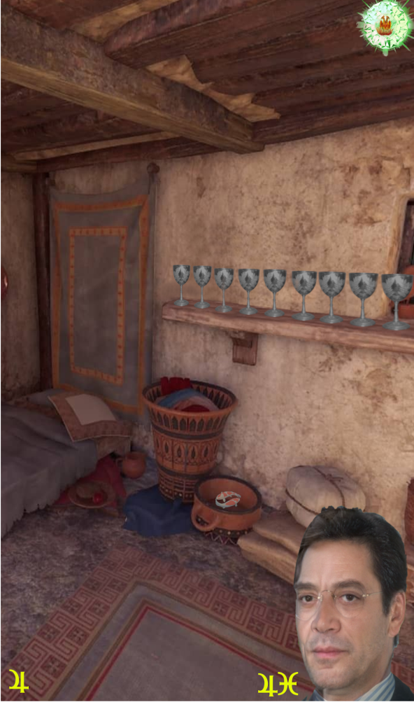
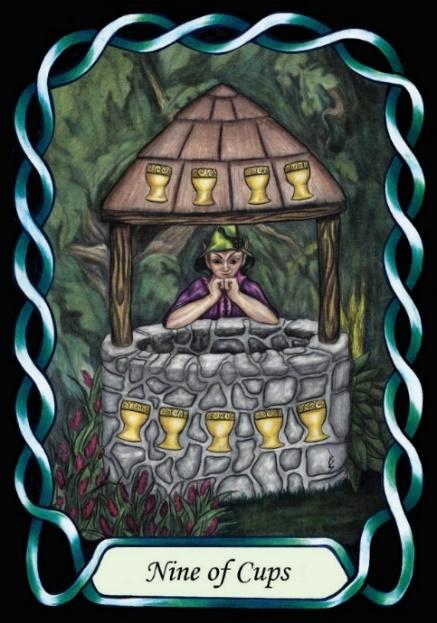

Nine of Cups



Sign |
|
Twelve: unseen realm |
|
Sign Ruler |
|
Element |
Water: emotions |
Modality |
|
Symbol |
Fish |
Decan |
|
Decan Ruler |
|
Time |
March 1 - 10 |
|
|
The Loner Pisces II
A Journeyman of the unseen world, doubly influenced by Jupiter, takes on the aspect of the Hermit, living simply, without regard for the material world. He practices the spiritual life, leaving lesser pleasures behind. This is the second initiation on the spiritual path.
Pisces are content to be themselves. They don’t need company and can be happy by themselves. They do have a tendency towards collecting items of interest or beauty, such as the Cups shown. If they have the money, they will create a pleasant environment, and spend much of their time in it, but they don’t particularly need it. They can be just as comfortable in a cosy little cottage.
Goldschneider Personology
Being of both Water and Jupiter, these Pisces have a love of comfort and pleasure, but in an emotional sense more so than physical. They tend towards creating a pleasant home, to be shared with carefully selected compatible friends and family. They have little needs of wealth or glory as destinations, focussing instead on each step of a pleasant life journey.
Examples: Raul Julia, Javier Bardem
RWS Imagery
A man sits alone in the comfort of his own home, surrounded by things that give him pleasure. The Jupiterian nature of this card is shown in the man’s large build, and reflects in the cards meaning as a love of food and wine. Waite says that the man has just eaten a large meal.
Pymander Imagery
A Loner lives in a simple House. He is content within himself, for his happiness is in the Cups – his heart – and not in material possessions. He lives in, and enjoys, the moment, rather than needing to prop up his image with material objects.
Summary
Represents spiritual maturity, simplicity, and contentment.